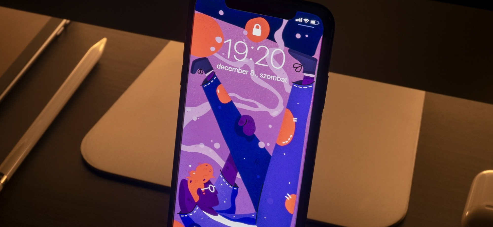

Mastering User Experience: Key Principles and Best Practices
Posted By Lora Gonzales / May 12, 2024

Mastering User Experience: Key Principles and Best Practices" delves into the core concepts and methodologies essential for creating exceptional user experiences (UX). In this blog post, we explore the foundational principles that guide effective UX design, such as usability, accessibility, and user-centricity.
We begin by discussing the importance of understanding the needs, preferences, and behaviors of target users. By conducting thorough user research, including interviews, surveys, and usability testing, designers gain valuable insights that inform the design process.
Next, we explore the significance of intuitive and user-friendly interfaces. Through the application of information architecture, interaction design, and visual hierarchy, designers can create interfaces that are easy to navigate and understand.
Additionally, we delve into the role of consistency and coherence in UX design. Consistent design patterns and conventions help users feel familiar and confident as they interact with a product or service, ultimately enhancing their overall experience.
Furthermore, we examine the importance of accessibility in UX design. By ensuring that digital experiences are inclusive and accessible to users of all abilities, designers can maximize the reach and impact of their designs.
Throughout the blog post, we highlight practical examples and case studies that illustrate these key principles in action. By mastering these foundational principles and best practices, designers can create meaningful and impactful user experiences that delight.